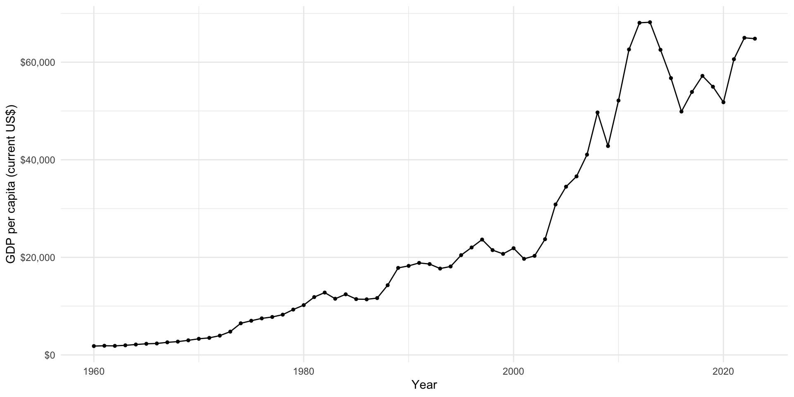
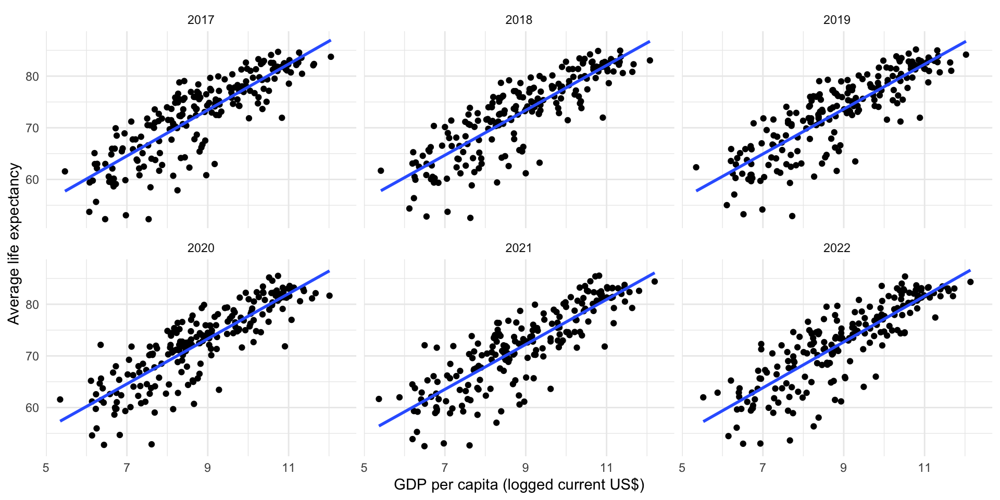

install.packages(c("tidyverse", "janitor", "scales", "wbstats"))Data Wrangling
Set up
To complete this session, you need to load in the following R packages:
Install packages
To install new R packages, run the following (excluding the packages you have already installed):
Introduction
I am now going to introduce you to a set of important tools for tidying your data. Oftentimes, the data we want to work with does not come to us in a format that is easy for us to use. We need to wrangle it into a better structure and remove inconsistencies.
We will continue to work with the variables the Gapminder Project is interested in: health and wealth. However, instead of accessing the lovely clean data set provided to you in the gapminder R package, we are going to go straight to the source and collect data on countries’ GDP per capita and average life expectancy from the World Bank. Let’s get started!
Lengthening messy data
The World Bank provides us with access to a trove of official country- and sub-national level data that are very useful for political analysis. I use their data in nearly all of my research. Sadly, they tend to provide their data in a messy format. We will now collect that messy data so we can learn how to tidy it up.
To access their data and some wonderful data visualizations, you can head over to their data portal: https://data.worldbank.org/. From there, you can browse which data sets they have or search for ones you are interested in.
We are going to start by collecting data on countries’ GDP per capita (current US$). It can be accessed here: https://data.worldbank.org/indicator/NY.GDP.PCAP.CD. You can download the data directly from this web page, save it in the appropriate place in your RProject, and read it in from there.
Note
This process is similar to the one we used in Session 2: From Samples to the Population.
I saved the CSV in the data folder (which is the in the content folder because this is a website), so I will use here::here() to adaptively find the correct file path and read the file in using read_csv().
After running this yourself, you will see an ominous warning. Let’s take a look at our data:
gdp_per_cap_raw# A tibble: 268 × 3
`Data Source` `World Development Indicators` ...3
<chr> <chr> <chr>
1 Last Updated Date 2024-12-16 <NA>
2 Country Name Country Code "Indicator Name,I…
3 Aruba ABW "GDP per capita (…
4 Africa Eastern and Southern AFE "GDP per capita (…
5 Afghanistan AFG "GDP per capita (…
6 Africa Western and Central AFW "GDP per capita (…
7 Angola AGO "GDP per capita (…
8 Albania ALB "GDP per capita (…
9 Andorra AND "GDP per capita (…
10 Arab World ARB "GDP per capita (…
# ℹ 258 more rowsWe have only three columns, none of which appear to have the right names. It also looks like the first few rows may, in fact, not be rows in our data set. Rather, they are metadata, including the last time the data were updated.
The second row in our data set looks like the real column headings. This is good! We can skip the first few rows using read_csv()’s skip argument. Just provide it with the number of rows you want to skip when reading in the CSV.
gdp_per_cap_raw <- read_csv(here::here("content", "data",
"API_NY.GDP.PCAP.CD_DS2_en_csv_v2_76.csv"),
skip = 3)
gdp_per_cap_raw# A tibble: 266 × 69
`Country Name` `Country Code` `Indicator Name` `Indicator Code` `1960` `1961`
<chr> <chr> <chr> <chr> <dbl> <dbl>
1 Aruba ABW GDP per capita … NY.GDP.PCAP.CD NA NA
2 Africa Easter… AFE GDP per capita … NY.GDP.PCAP.CD 186. 187.
3 Afghanistan AFG GDP per capita … NY.GDP.PCAP.CD NA NA
4 Africa Wester… AFW GDP per capita … NY.GDP.PCAP.CD 122. 127.
5 Angola AGO GDP per capita … NY.GDP.PCAP.CD NA NA
6 Albania ALB GDP per capita … NY.GDP.PCAP.CD NA NA
7 Andorra AND GDP per capita … NY.GDP.PCAP.CD NA NA
8 Arab World ARB GDP per capita … NY.GDP.PCAP.CD NA 213.
9 United Arab E… ARE GDP per capita … NY.GDP.PCAP.CD NA NA
10 Argentina ARG GDP per capita … NY.GDP.PCAP.CD NA NA
# ℹ 256 more rows
# ℹ 63 more variables: `1962` <dbl>, `1963` <dbl>, `1964` <dbl>, `1965` <dbl>,
# `1966` <dbl>, `1967` <dbl>, `1968` <dbl>, `1969` <dbl>, `1970` <dbl>,
# `1971` <dbl>, `1972` <dbl>, `1973` <dbl>, `1974` <dbl>, `1975` <dbl>,
# `1976` <dbl>, `1977` <dbl>, `1978` <dbl>, `1979` <dbl>, `1980` <dbl>,
# `1981` <dbl>, `1982` <dbl>, `1983` <dbl>, `1984` <dbl>, `1985` <dbl>,
# `1986` <dbl>, `1987` <dbl>, `1988` <dbl>, `1989` <dbl>, `1990` <dbl>, …That looks better! We have now read in the data set itself, skipping those rows of metadata.
The resulting data set is a wide one. Each observation is a country or region. The first two columns provide information on the country. The third and fourth describe the indicator. All other columns provide each country’s GDP per capita in all years from 1960 to 2023.
Now, imagine you want to compare a country’s GDP per capita across many years. For example, you want to know how Australians’ wealth has grown over time. This is very difficult to do with this current format. We would need to work with all columns from 1960 to 2023!
To make these data easier to work with, we will lengthen the data set. Instead of each observation (row) describing a country, we will make each observation describe a country-year.
To do this, we need to use pivot_longer(). We need to let it know which columns we want to transpose using the col argument. Because the end year for these data will change each year I want to pull and clean up this data set (for example, next year the last column will be 2024, not 2023), I will use ! to negate the columns I don’t want to transpose. This code will, therefore, work after each annual update to the data set.
gdp_per_cap <- gdp_per_cap_raw |>
pivot_longer(cols = !c(`Country Name`:`Indicator Code`),
names_to = "year",
values_to = "gdp_per_cap")
gdp_per_cap# A tibble: 17,290 × 6
`Country Name` `Country Code` `Indicator Name` `Indicator Code` year
<chr> <chr> <chr> <chr> <chr>
1 Aruba ABW GDP per capita (current… NY.GDP.PCAP.CD 1960
2 Aruba ABW GDP per capita (current… NY.GDP.PCAP.CD 1961
3 Aruba ABW GDP per capita (current… NY.GDP.PCAP.CD 1962
4 Aruba ABW GDP per capita (current… NY.GDP.PCAP.CD 1963
5 Aruba ABW GDP per capita (current… NY.GDP.PCAP.CD 1964
6 Aruba ABW GDP per capita (current… NY.GDP.PCAP.CD 1965
7 Aruba ABW GDP per capita (current… NY.GDP.PCAP.CD 1966
8 Aruba ABW GDP per capita (current… NY.GDP.PCAP.CD 1967
9 Aruba ABW GDP per capita (current… NY.GDP.PCAP.CD 1968
10 Aruba ABW GDP per capita (current… NY.GDP.PCAP.CD 1969
# ℹ 17,280 more rows
# ℹ 1 more variable: gdp_per_cap <dbl>I have also told pivot_longer() what to call the column containing the previous column names (using names_to) and the column containing the values (using values_to).
You might have noticed that I needed to include some back ticks when referencing those column names. This is because these column names do not follow the rules put in place to help you work with R. Column names must:
Not include spaces
Not start with numbers or special characters
They should also be:
Short
Meaningful
Consistently formatted
The World Bank uses spaces in its column names. We need to remove those so we can more easily work with them in R. Happily, the very handy janitor R package is here for all of your cleaning needs!
I use the clean_names() function to ensure names are clean and consistent:
gdp_per_cap <- clean_names(gdp_per_cap)
gdp_per_cap# A tibble: 17,290 × 6
country_name country_code indicator_name indicator_code year gdp_per_cap
<chr> <chr> <chr> <chr> <chr> <dbl>
1 Aruba ABW GDP per capita (c… NY.GDP.PCAP.CD 1960 NA
2 Aruba ABW GDP per capita (c… NY.GDP.PCAP.CD 1961 NA
3 Aruba ABW GDP per capita (c… NY.GDP.PCAP.CD 1962 NA
4 Aruba ABW GDP per capita (c… NY.GDP.PCAP.CD 1963 NA
5 Aruba ABW GDP per capita (c… NY.GDP.PCAP.CD 1964 NA
6 Aruba ABW GDP per capita (c… NY.GDP.PCAP.CD 1965 NA
7 Aruba ABW GDP per capita (c… NY.GDP.PCAP.CD 1966 NA
8 Aruba ABW GDP per capita (c… NY.GDP.PCAP.CD 1967 NA
9 Aruba ABW GDP per capita (c… NY.GDP.PCAP.CD 1968 NA
10 Aruba ABW GDP per capita (c… NY.GDP.PCAP.CD 1969 NA
# ℹ 17,280 more rowsGreat! We’re almost there. Next, we need to check that R has correctly classified our data types. For example, we want to make sure that the years are coded as numbers not strings of characters.
glimpse(gdp_per_cap)Rows: 17,290
Columns: 6
$ country_name <chr> "Aruba", "Aruba", "Aruba", "Aruba", "Aruba", "Aruba", "…
$ country_code <chr> "ABW", "ABW", "ABW", "ABW", "ABW", "ABW", "ABW", "ABW",…
$ indicator_name <chr> "GDP per capita (current US$)", "GDP per capita (curren…
$ indicator_code <chr> "NY.GDP.PCAP.CD", "NY.GDP.PCAP.CD", "NY.GDP.PCAP.CD", "…
$ year <chr> "1960", "1961", "1962", "1963", "1964", "1965", "1966",…
$ gdp_per_cap <dbl> NA, NA, NA, NA, NA, NA, NA, NA, NA, NA, NA, NA, NA, NA,…Hmm, it does appear to have read the years in as characters. Why?
unique(gdp_per_cap$year) [1] "1960" "1961" "1962" "1963" "1964" "1965" "1966" "1967" "1968"
[10] "1969" "1970" "1971" "1972" "1973" "1974" "1975" "1976" "1977"
[19] "1978" "1979" "1980" "1981" "1982" "1983" "1984" "1985" "1986"
[28] "1987" "1988" "1989" "1990" "1991" "1992" "1993" "1994" "1995"
[37] "1996" "1997" "1998" "1999" "2000" "2001" "2002" "2003" "2004"
[46] "2005" "2006" "2007" "2008" "2009" "2010" "2011" "2012" "2013"
[55] "2014" "2015" "2016" "2017" "2018" "2019" "2020" "2021" "2022"
[64] "2023" "...69"Looking at all unique values included in the year column, we can see the culprit: "...69". It looks like the CSV includes a rouge last column with no data in it. read_csv() read that column in and coded all its values as NA:
# A tibble: 1 × 1
gdp_per_cap
<dbl>
1 NAWe can simply filter this out of our data set to get rid of it and convert the remaining values to numbers using mutate():
gdp_per_cap <- gdp_per_cap |>
filter(year != "...69") |>
mutate(year = as.numeric(year))
gdp_per_cap# A tibble: 17,024 × 6
country_name country_code indicator_name indicator_code year gdp_per_cap
<chr> <chr> <chr> <chr> <dbl> <dbl>
1 Aruba ABW GDP per capita (c… NY.GDP.PCAP.CD 1960 NA
2 Aruba ABW GDP per capita (c… NY.GDP.PCAP.CD 1961 NA
3 Aruba ABW GDP per capita (c… NY.GDP.PCAP.CD 1962 NA
4 Aruba ABW GDP per capita (c… NY.GDP.PCAP.CD 1963 NA
5 Aruba ABW GDP per capita (c… NY.GDP.PCAP.CD 1964 NA
6 Aruba ABW GDP per capita (c… NY.GDP.PCAP.CD 1965 NA
7 Aruba ABW GDP per capita (c… NY.GDP.PCAP.CD 1966 NA
8 Aruba ABW GDP per capita (c… NY.GDP.PCAP.CD 1967 NA
9 Aruba ABW GDP per capita (c… NY.GDP.PCAP.CD 1968 NA
10 Aruba ABW GDP per capita (c… NY.GDP.PCAP.CD 1969 NA
# ℹ 17,014 more rowsWe now have a nice and clean data set that is easy to work with. Let’s take a look at Australia’s growth over time:
gdp_per_cap |>
filter(country_name == "Australia") |>
ggplot(aes(x = year, y = gdp_per_cap)) +
geom_line() +
geom_point(size = 1) +
theme_minimal() +
labs(x = "Year",
y = "GDP per capita (current US$)") +
scale_y_continuous(labels = dollar)
Widening messy data
Sometimes you want to widen your data. tidyr provides a similar function, pivot_wider(), to do just this. Let’s start by getting some long data. We will again collect these data from the World Bank, but this time we will use wbstats to access it directly through the API.
We will add to our data set information on each country’s average life expectancy (ID: SP.DYN.LE00.IN).
gapminder_raw <- wb_data(
indicator = c("SP.DYN.LE00.IN", "NY.GDP.PCAP.CD"),
return_wide = F
)
gapminder_raw# A tibble: 27,776 × 11
indicator_id indicator iso2c iso3c country date value unit obs_status
<chr> <chr> <chr> <chr> <chr> <dbl> <dbl> <chr> <chr>
1 SP.DYN.LE00.IN Life expecta… AF AFG Afghan… 2023 NA <NA> <NA>
2 SP.DYN.LE00.IN Life expecta… AF AFG Afghan… 2022 62.9 <NA> <NA>
3 SP.DYN.LE00.IN Life expecta… AF AFG Afghan… 2021 62.0 <NA> <NA>
4 SP.DYN.LE00.IN Life expecta… AF AFG Afghan… 2020 62.6 <NA> <NA>
5 SP.DYN.LE00.IN Life expecta… AF AFG Afghan… 2019 63.6 <NA> <NA>
6 SP.DYN.LE00.IN Life expecta… AF AFG Afghan… 2018 63.1 <NA> <NA>
7 SP.DYN.LE00.IN Life expecta… AF AFG Afghan… 2017 63.0 <NA> <NA>
8 SP.DYN.LE00.IN Life expecta… AF AFG Afghan… 2016 63.1 <NA> <NA>
9 SP.DYN.LE00.IN Life expecta… AF AFG Afghan… 2015 62.7 <NA> <NA>
10 SP.DYN.LE00.IN Life expecta… AF AFG Afghan… 2014 62.5 <NA> <NA>
# ℹ 27,766 more rows
# ℹ 2 more variables: footnote <chr>, last_updated <date>
Note
By default, the wonderful wb_data() function will return data to you in a clean (and wide) format. Therefore, to illustrate how to wrangle these data, I need to include the return_wide = F argument.
We now have data on each country-year-indicator. For example, let’s look at what we have for Afghanistan in 2018:
gapminder_raw |>
filter(country == "Afghanistan", date == 2018)# A tibble: 2 × 11
indicator_id indicator iso2c iso3c country date value unit obs_status
<chr> <chr> <chr> <chr> <chr> <dbl> <dbl> <chr> <chr>
1 SP.DYN.LE00.IN Life expectan… AF AFG Afghan… 2018 63.1 <NA> <NA>
2 NY.GDP.PCAP.CD GDP per capit… AF AFG Afghan… 2018 491. <NA> <NA>
# ℹ 2 more variables: footnote <chr>, last_updated <date>This is difficult to work with. For example, think about how you would plot each country’s GDP per capita against its average life expectancy for a single year.
We need to make these data wider. We want our observations to be country-year. We will therefore have a column for each country-year’s GDP per capita and its average life expectancy.
pivot_wider() works by creating a new column for each unique value in the column you tell it to draws names from (using the names_from argument). It will then populate that column with the corresponding value from the column you tell it to draw values from (using the values_from argument). It preserves all unique values in the other rows.
This is a little easier to understand in practice. Let’s step through widening our Gapminder data. I’ll start by diving straight in:
pivot_wider(gapminder_raw, names_from = indicator_id, values_from = value)# A tibble: 27,776 × 11
indicator iso2c iso3c country date unit obs_status footnote last_updated
<chr> <chr> <chr> <chr> <dbl> <chr> <chr> <chr> <date>
1 Life expect… AF AFG Afghan… 2023 <NA> <NA> <NA> 2024-12-16
2 Life expect… AF AFG Afghan… 2022 <NA> <NA> <NA> 2024-12-16
3 Life expect… AF AFG Afghan… 2021 <NA> <NA> <NA> 2024-12-16
4 Life expect… AF AFG Afghan… 2020 <NA> <NA> <NA> 2024-12-16
5 Life expect… AF AFG Afghan… 2019 <NA> <NA> <NA> 2024-12-16
6 Life expect… AF AFG Afghan… 2018 <NA> <NA> <NA> 2024-12-16
7 Life expect… AF AFG Afghan… 2017 <NA> <NA> <NA> 2024-12-16
8 Life expect… AF AFG Afghan… 2016 <NA> <NA> <NA> 2024-12-16
9 Life expect… AF AFG Afghan… 2015 <NA> <NA> <NA> 2024-12-16
10 Life expect… AF AFG Afghan… 2014 <NA> <NA> <NA> 2024-12-16
# ℹ 27,766 more rows
# ℹ 2 more variables: SP.DYN.LE00.IN <dbl>, NY.GDP.PCAP.CD <dbl>We now have two new columns: SP.DYN.LE00.IN for average life expectancy, and NY.GDP.PCAP.CD for GDP per capita. These columns contain the corresponding values for each country-year’s average life expectancy and GDP per capita.
However, something has gone wrong. Our wider data set should have fewer rows than our longer one. This is because we are hoping to have one row for each country-year containing information on its average life expectancy and GDP per capita for each year, rather than two rows for each country-year (one for each indicator). Why is this happening?
Well, the World Bank data set includes unique information about each indicator in the indicator column. Because this is country-year-indicator level information, pivot_wider() - in an attempt to preserve that information - creates a country-year-indicator level data set. To tidy and widen our data set, we need to remove all country-year-indicator level information and then pivot it.
gapminder <- gapminder_raw |>
select(!indicator) |>
pivot_wider(names_from = indicator_id, values_from = value)
gapminder# A tibble: 13,897 × 10
iso2c iso3c country date unit obs_status footnote last_updated
<chr> <chr> <chr> <dbl> <chr> <chr> <chr> <date>
1 AF AFG Afghanistan 2023 <NA> <NA> <NA> 2024-12-16
2 AF AFG Afghanistan 2022 <NA> <NA> <NA> 2024-12-16
3 AF AFG Afghanistan 2021 <NA> <NA> <NA> 2024-12-16
4 AF AFG Afghanistan 2020 <NA> <NA> <NA> 2024-12-16
5 AF AFG Afghanistan 2019 <NA> <NA> <NA> 2024-12-16
6 AF AFG Afghanistan 2018 <NA> <NA> <NA> 2024-12-16
7 AF AFG Afghanistan 2017 <NA> <NA> <NA> 2024-12-16
8 AF AFG Afghanistan 2016 <NA> <NA> <NA> 2024-12-16
9 AF AFG Afghanistan 2015 <NA> <NA> <NA> 2024-12-16
10 AF AFG Afghanistan 2014 <NA> <NA> <NA> 2024-12-16
# ℹ 13,887 more rows
# ℹ 2 more variables: SP.DYN.LE00.IN <dbl>, NY.GDP.PCAP.CD <dbl>Much better! We now have a data set at the country-year level. Each country-year has information on its average life expectancy and GDP per capita.
Those variable names are hard to work with and not very meaningful, so we need to clean them up:
gapminder <- rename(gapminder, avg_life_exp = SP.DYN.LE00.IN, gdp_per_cap = NY.GDP.PCAP.CD)
gapminder# A tibble: 13,897 × 10
iso2c iso3c country date unit obs_status footnote last_updated avg_life_exp
<chr> <chr> <chr> <dbl> <chr> <chr> <chr> <date> <dbl>
1 AF AFG Afghan… 2023 <NA> <NA> <NA> 2024-12-16 NA
2 AF AFG Afghan… 2022 <NA> <NA> <NA> 2024-12-16 62.9
3 AF AFG Afghan… 2021 <NA> <NA> <NA> 2024-12-16 62.0
4 AF AFG Afghan… 2020 <NA> <NA> <NA> 2024-12-16 62.6
5 AF AFG Afghan… 2019 <NA> <NA> <NA> 2024-12-16 63.6
6 AF AFG Afghan… 2018 <NA> <NA> <NA> 2024-12-16 63.1
7 AF AFG Afghan… 2017 <NA> <NA> <NA> 2024-12-16 63.0
8 AF AFG Afghan… 2016 <NA> <NA> <NA> 2024-12-16 63.1
9 AF AFG Afghan… 2015 <NA> <NA> <NA> 2024-12-16 62.7
10 AF AFG Afghan… 2014 <NA> <NA> <NA> 2024-12-16 62.5
# ℹ 13,887 more rows
# ℹ 1 more variable: gdp_per_cap <dbl>There is also a fair bit of information in this data set that I do not need, so I will remove it and reorder the columns so they are easier to view:
gapminder <- select(gapminder, country, iso3c, date, avg_life_exp, gdp_per_cap)
gapminder# A tibble: 13,897 × 5
country iso3c date avg_life_exp gdp_per_cap
<chr> <chr> <dbl> <dbl> <dbl>
1 Afghanistan AFG 2023 NA 416.
2 Afghanistan AFG 2022 62.9 357.
3 Afghanistan AFG 2021 62.0 356.
4 Afghanistan AFG 2020 62.6 511.
5 Afghanistan AFG 2019 63.6 497.
6 Afghanistan AFG 2018 63.1 491.
7 Afghanistan AFG 2017 63.0 525.
8 Afghanistan AFG 2016 63.1 522.
9 Afghanistan AFG 2015 62.7 566.
10 Afghanistan AFG 2014 62.5 625.
# ℹ 13,887 more rowsWe now have a nice, clean, and wide data set. You can easily look at the relationship between your two variables of interest over time:
gapminder |>
filter(date %in% 2017:2022) |>
ggplot(aes(x = log(gdp_per_cap), y = avg_life_exp)) +
geom_point() +
geom_smooth(method = "lm", se = F) +
facet_wrap(~ date) +
theme_minimal() +
labs(x = "GDP per capita (logged current US$)",
y = "Average life expectancy")
Tip
facet_wrap() creates a unique plot for each value in the column you specify. Here, I have used it to create six plots for each of the six years from 2017 to 2022.
Exercises
Name three different types of cases you can use through janitor::clean_names() to format your column names.
HINT
Read the argument descriptions in the clean_names() function documentation (by running ?clean_names in your console.
Check your answer
Here is the full list:
c("snake", "small_camel", "big_camel",
"screaming_snake", "parsed", "mixed", "lower_upper", "upper_lower",
"swap", "all_caps", "lower_camel", "upper_camel", "internal_parsing",
"none", "flip", "sentence", "random", "title")I like the default (snake case), but other common ones include big camel and all caps.
How would you lengthen the gapminder data set we created earlier?
Check your answer
gapminder |>
pivot_longer(cols = avg_life_exp:gdp_per_cap, names_to = "indicator")# A tibble: 27,794 × 5
country iso3c date indicator value
<chr> <chr> <dbl> <chr> <dbl>
1 Afghanistan AFG 2023 avg_life_exp NA
2 Afghanistan AFG 2023 gdp_per_cap 416.
3 Afghanistan AFG 2022 avg_life_exp 62.9
4 Afghanistan AFG 2022 gdp_per_cap 357.
5 Afghanistan AFG 2021 avg_life_exp 62.0
6 Afghanistan AFG 2021 gdp_per_cap 356.
7 Afghanistan AFG 2020 avg_life_exp 62.6
8 Afghanistan AFG 2020 gdp_per_cap 511.
9 Afghanistan AFG 2019 avg_life_exp 63.6
10 Afghanistan AFG 2019 gdp_per_cap 497.
# ℹ 27,784 more rows